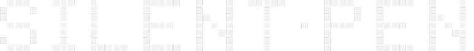
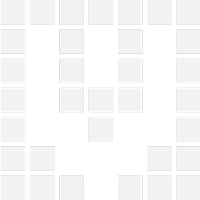
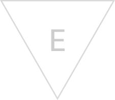
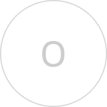
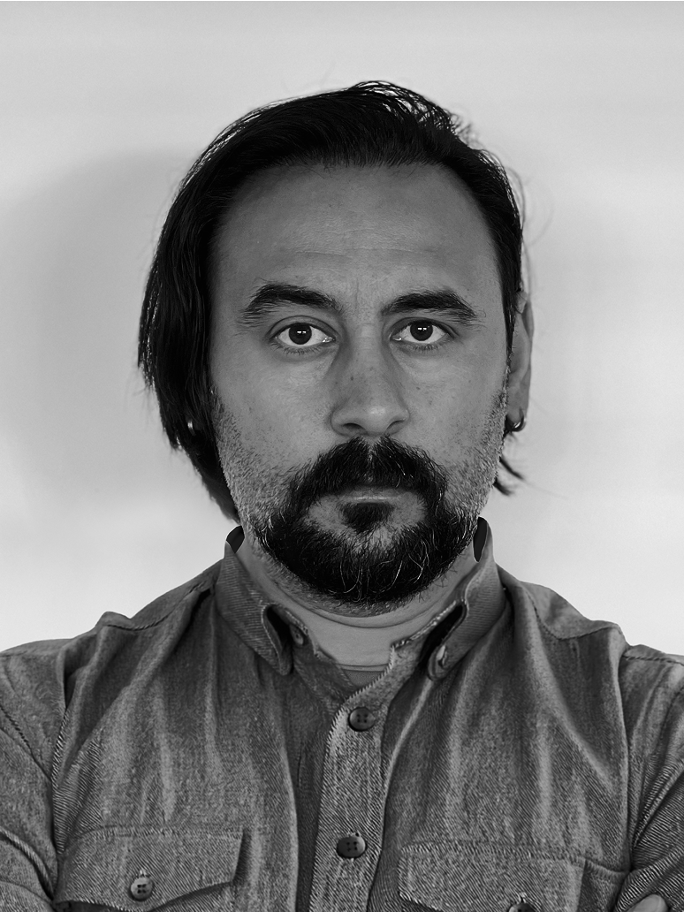

UI/UX designer building interface systems that hold up under pressure — FUI/HUD, game UI, and product design across SaaS, enterprise, defence, space, games, movies, and startups.





0*78946 0*788941AUTHORIZED FOR OPT3 and DESIGNATED RESEARCH AREAS AND DIVISIONS: IOE)+(20734*/-*)/2
Hello, I'm Emrah Özbay — a senior, product-minded UX/UI designer with 13+ years shaping complex interactive systems across AAA gaming, defence, and B2B SaaS platforms. I own features end-to-end — discovery, stakeholder alignment, wireframes, high-fidelity prototypes, developer-ready delivery — bridging design and engineering in agile, cross-functional teams. Before design, I spent years on Turkish film and TV sets as a photographer and crew member, which still shapes how I think about pacing, framing, and story inside every interface I build.
HUD/FUI visuals and motion graphics for the sci-fi film 4 Profiles.
Four years designing scalable UI systems for AAA console/PC development, including World of Tanks' Waffenträger project.
UX strategy and interface design for enterprise B2B logistics — multinational truck, rail, and cargo platforms.
Gameplay HUD, menus, and meta systems on Alder's Blood and Nadir.
Branding and visual systems for the Mercedes-Benz UCI MTB World Cup Maribor and FIS Alpine Ski, with Red Bull Media House.
assets/project-01-cover.jpg
A speculative UX system for covert global threat monitoring, real-time operations, and neural data extraction — a near-future tactical interface built around decision-making under pressure.
assets/project-02-cover.jpg
UI/UX design of the gameplay and meta-game for Projekt Hyperion, a major World of Tanks event. Built with a small team spanning three cities.
assets/project-03-cover.jpg
UI/UX for an asymmetric 6v1 event mode — modified tanks and special abilities in an alternate WoT universe, covering gameplay, meta-game, and shop.
assets/project-04-cover.jpg
HUD and interface design for the Paradox event mode, covering the in-match UI and its supporting meta-game screens.
assets/project-05-cover.jpg
UX/UI for a post-mortem feature giving players detailed feedback on tank destruction, supporting learning, map exploration, and tactical review.
assets/project-06-cover.jpg
A full simulated operating system: an animated boot log, an IP-authentication sequence, and a system-select menu across four distinct tactical consoles.
assets/project-07-cover.jpg
A functional interface concept for a sub-light interstellar spacecraft, grounded in real aerospace instrumentation, physics-driven data, and transparent machine decision-making.
assets/project-08-cover.jpg
A study on translating the Star Wars universe into a mobile RPG — balancing visual fidelity with device constraints and usability.
assets/project-09-cover.jpg
Futuristic targeting systems and control interfaces exploring how minimal shapes and light communicate complex information.
assets/project-10-cover.jpg
Interface explorations for military aircraft systems built for games and film — near-future realism balanced against cinematic sci-fi.
assets/project-11-cover.jpg
Speculative typography for the KATU people of PH1b (Kepler-64b) — writing systems shaped by a two-sun, three-moon cosmology, from an ancient canyon script to a unified cross-community language.
assets/project-12-cover.jpg
A mobile UX case study redesigning League+, the companion app for LoL summoners — making match tracking, profiles, and game updates more connected and effective for players.